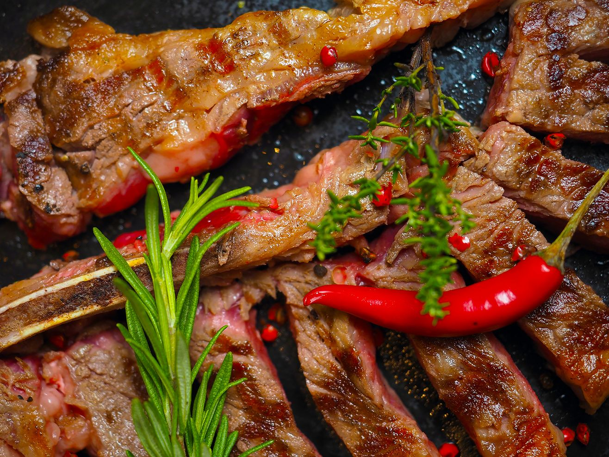

- NEWS -
Our News & Articles

Read more about Italian cuisine.
Wine Pairing: What Is It?
Wine pairing is the process of matching food and wines based on their flavor...
Read More
The Best Mediterranean Mussel Recipes by El Gambino
Mussels are popular because they are hearty, flavorful, and full of nutrients. Mussels are a great source of protein, vitamins and minerals.
Read More

What Types of Meat Do We Use for Juicy Steaks?
The best types of meat for juicy steaks are ribeye, strip, tenderloin, and filet mignon. Ribeye steaks are known for their excellent marbling.
Read More